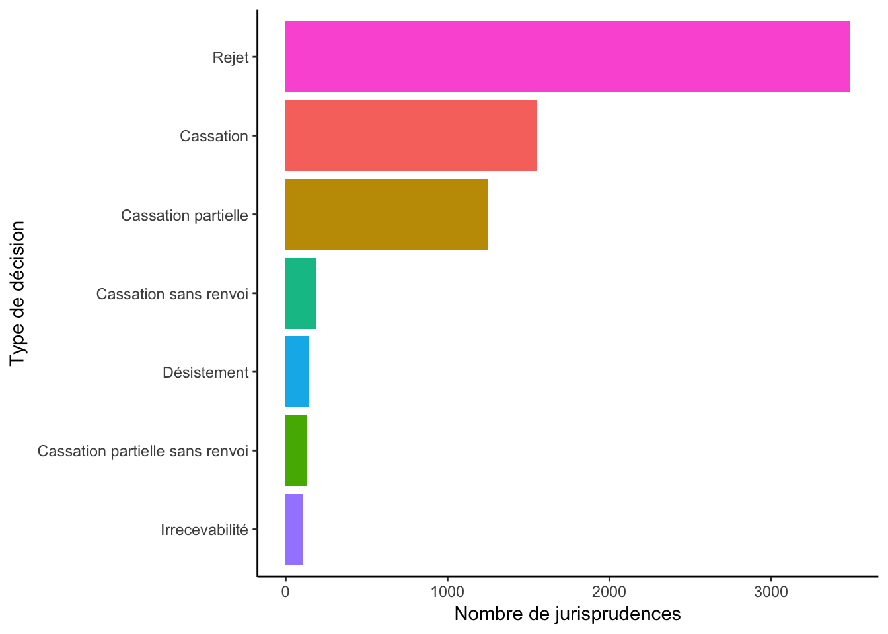
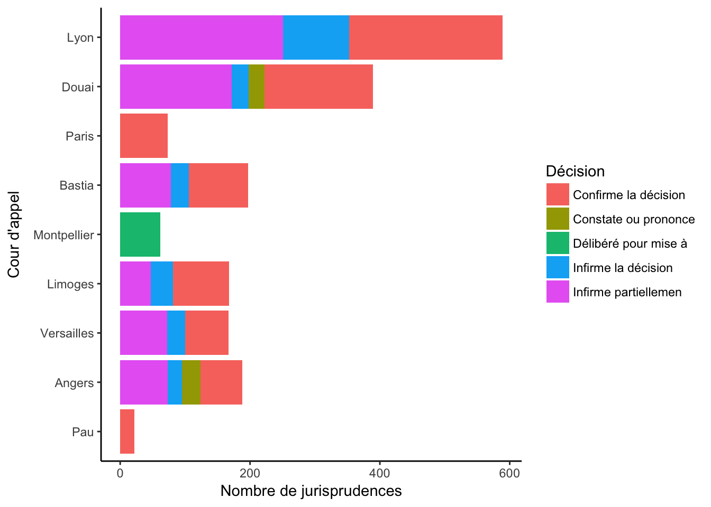

Un petit échantillon d’article a été analysé. Si l’étude vous intéresse, merci de me contacter..
Webscraping des jurisprudence: plus de 300 000 juriprudences collectées
Analyse des informations contextuelles des jurisprudences
Analyse des mots-clés
Analyse des artciles de la loi cités
Visualisation des données

Les différentes décisions sont:
Par cour d’appel, on peut visualiser les décisions (parfois les décisions ne sont pas précisés dans le texte):

On peut afficher le nombre de jurisprudences publiées par jour. A noter que les nombres ne sont pas représentatifs de la réalité comme un petit échantillon a été utilisé.
Comme certains articles sont très fréquemment cités, on va créer deux digrammes.
Les différentes techniques data sciences utilisées sont:
Copyright © 2017 Site de Kezhan Shi